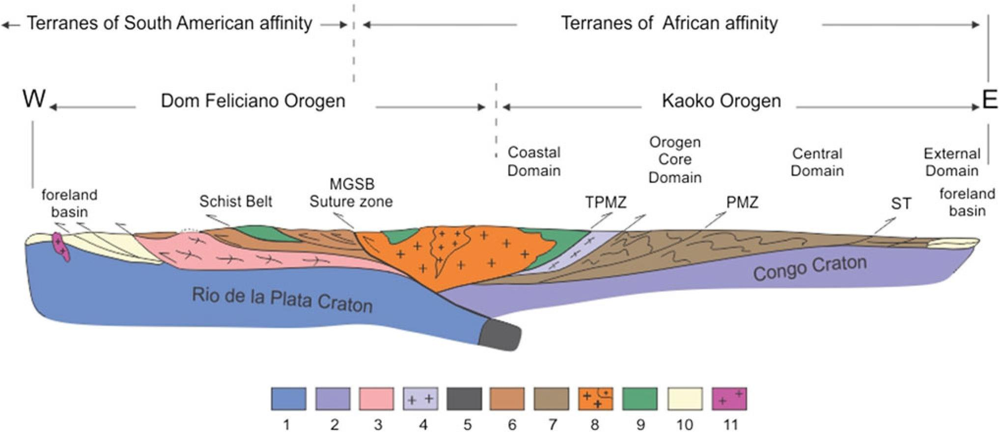

Tectonic History of the Southern Adamastor Ocean Based on a Correlation of the Kaoko and Dom Feliciano Belts

Resumo em Português
O fechamento do Oceano Adamastor meridional levou ao desenvolvimento dos orógenos neoproterozoicos-cambrianos iniciais em ambas as margens do atual Oceano Atlântico Sul, que preservam um rico registro da formação do Gondwana Ocidental e da evolução crustal em larga escala. Neste trabalho, descrevemos os distintos estágios e regimes tectônicos relacionados à evolução do Oceano Adamastor meridional, reconstruídos a partir do registro geológico no sudeste do Brasil, Uruguai e sudoeste da África. A união dos crátons Rio da Prata/Paranapanema e Africano foi o resultado de uma longa história que gerou a Faixa Dom Feliciano no sudeste do Brasil e Uruguai e suas contrapartes africanas, as faixas Kaoko, Gariep e Saldania. Ideias recentes e hipóteses anteriores são discutidas e integradas em um modelo tectônico para a evolução do Oceano Adamastor meridional, baseado principalmente na comparação das faixas neoproterozoicas Kaoko e Dom Feliciano. A história do Oceano Adamastor Meridional abrange o período entre 900 e 590 milhões de anos atrás, desde os primeiros registros de magmatismo relacionados à fragmentação da Rodínia (980–780 milhões de anos atrás), passando pelo clímax da fase extensional que levou à abertura de um vasto oceano (780–640 milhões de anos atrás). A inversão tectônica resultou na subducção para leste (nas coordenadas atuais), o que gerou um extenso arco magmático na margem oeste dos crátons do Congo e do Kalahari (640–600 milhões de anos atrás) e, eventualmente, na colisão entre os crátons do Congo e do Rio da Prata (600–590 milhões de anos atrás), justapondo o arco magmático aos cinturões de xisto da América do Sul ocidental. Por volta de 530 Ma, ainda sob a influência da convergência de placas, uma estrutura em flor positiva foi gerada, causando a extrusão do Cinturão Granítico, remanescente erodido do arco magmático, e a reativação das falhas inversas duplamente convergentes que afetaram as unidades supracrustais dos cinturões de Kaoko e Dom Feliciano. Somente nesse momento a deformação atingiu as bacias de antepaís de Itajaí e Nama.